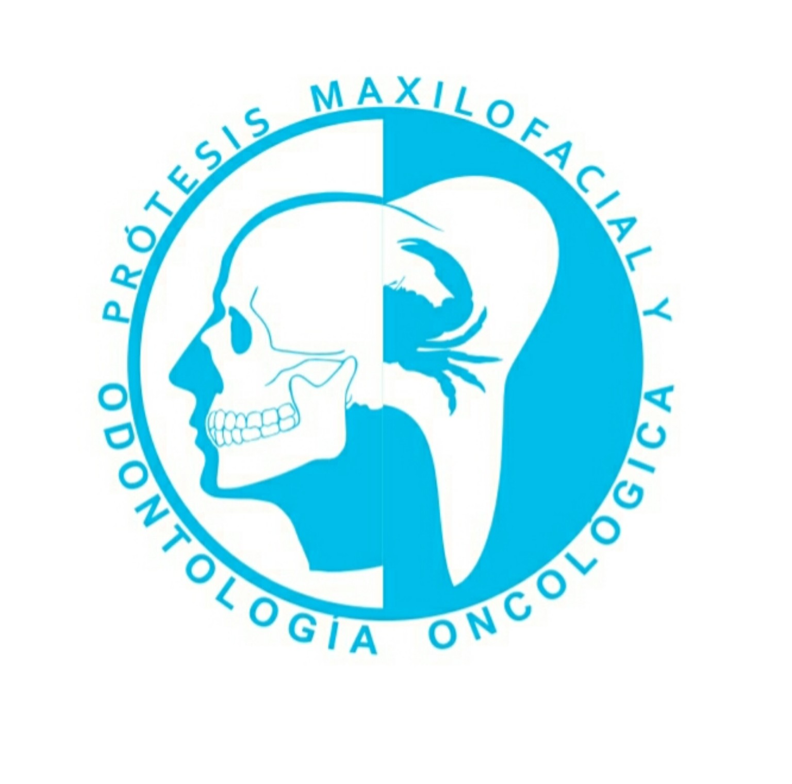
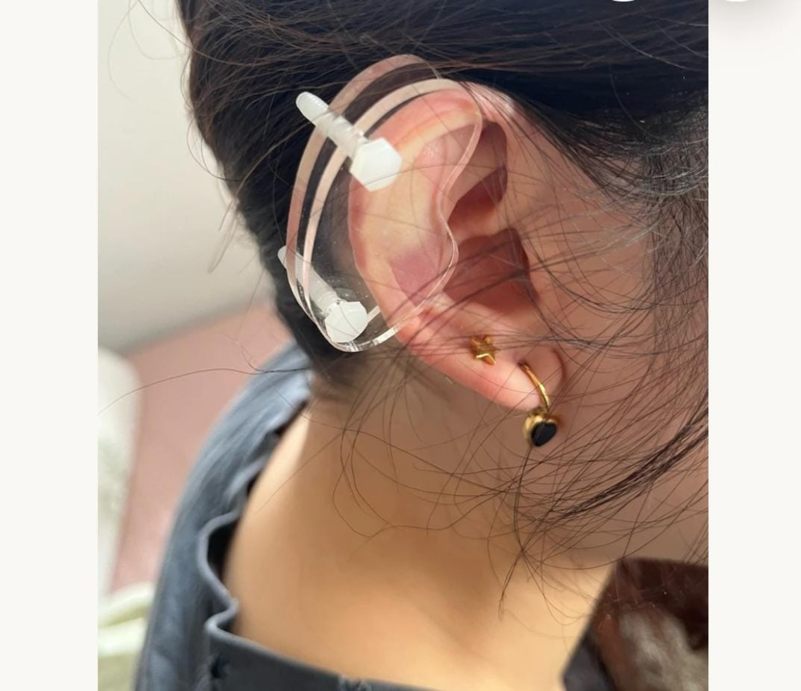

Servicio destacado
Atención odontológica del paciente con cáncer
Odontología oncológica: atención dental especializada para personas con diagnóstico de cáncer, de acuerdo con sus necesidades y en coordinación con su equipo médico.

Protesista Maxilofacial
Soluciones protésicas maxilofaciales y tratamientos estéticos. Consulta las opciones de atención y solicita información personalizada.
Odontología oncológica: atención dental especializada para personas con diagnóstico de cáncer, de acuerdo con sus necesidades y en coordinación con su equipo médico.

Dispositivo auricular de compresión. Imagen real de referencia.
Carretera a Cuautla N. 12, Zacualpan de Amilpas, Morelos
Camino al Estadio Azteca 179, Col. El Caracol, Coyoacán, C.P. 04739, Torre anexa de consultorios, 1er piso, consultorio 6, Hospital Merlos
Las ubicaciones se abren como búsquedas en Google Maps. Confirma la dirección y disponibilidad de atención antes de acudir.
Conoce más sobre el consultorio o envía un mensaje para solicitar una cita.